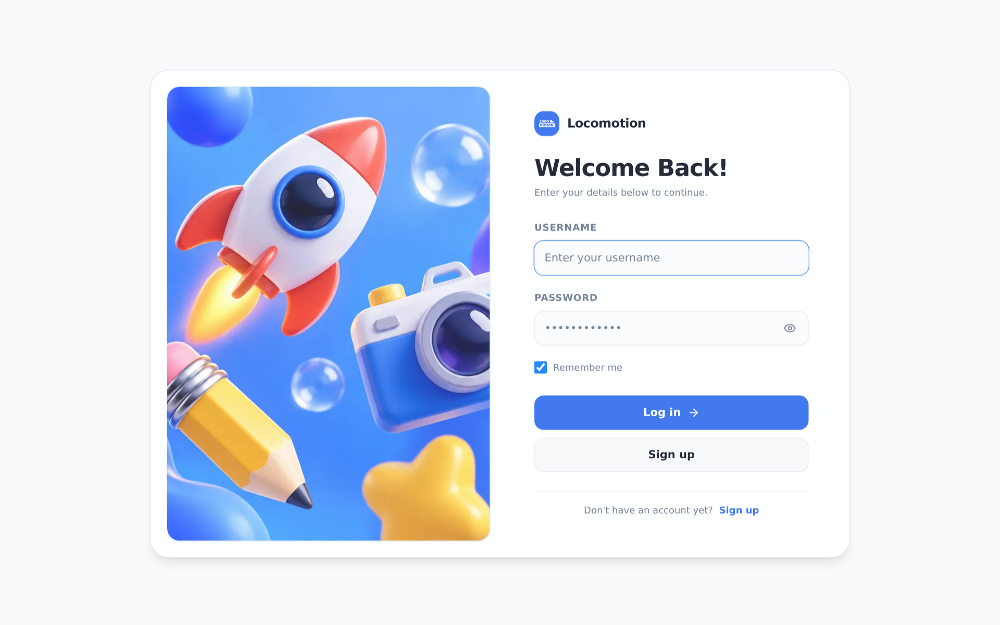
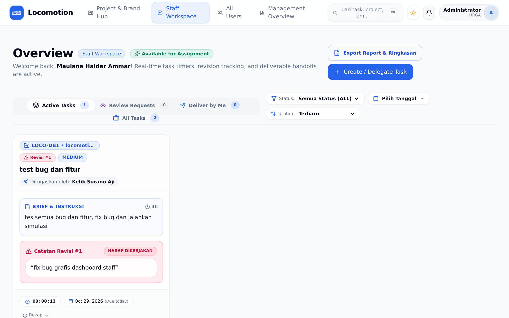
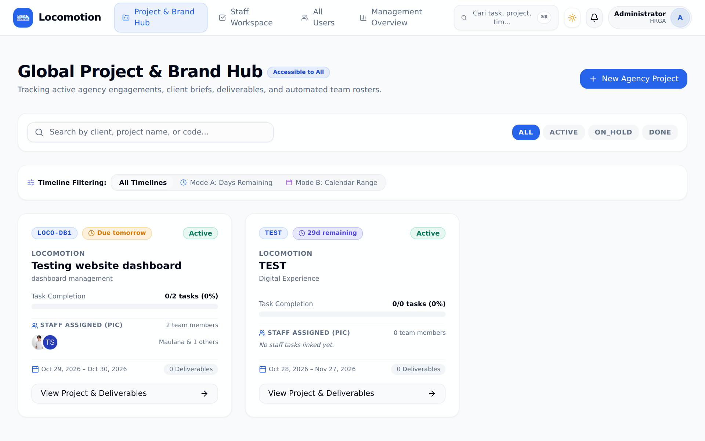
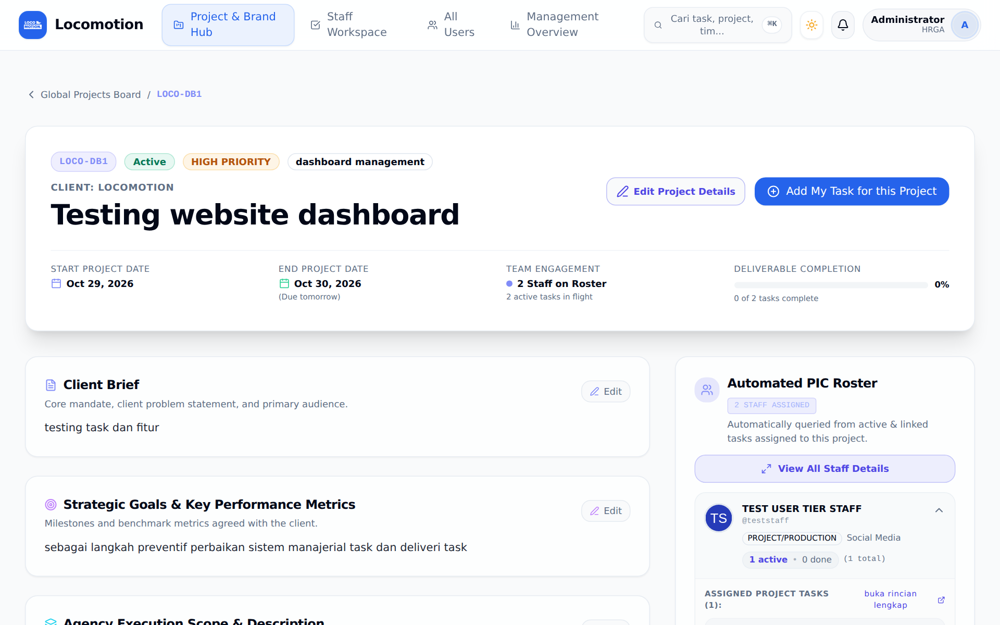
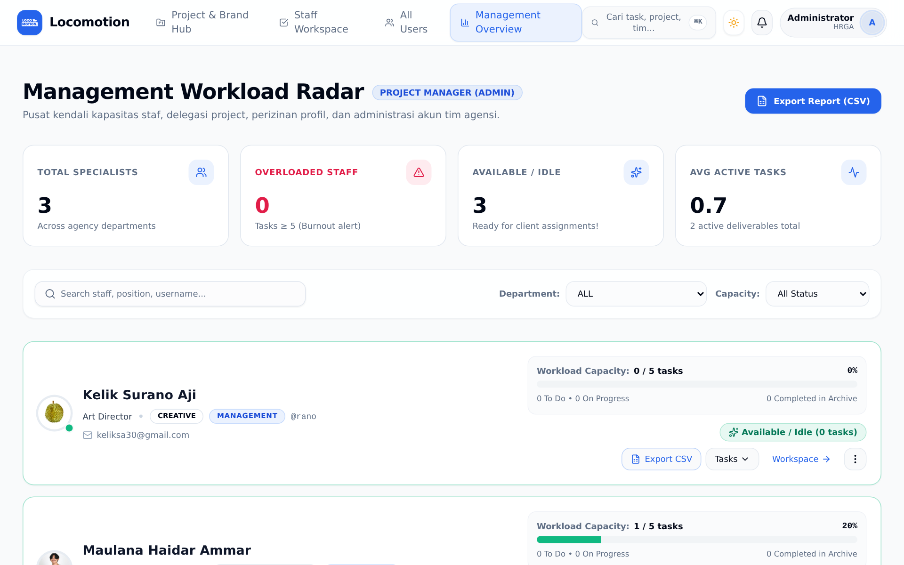
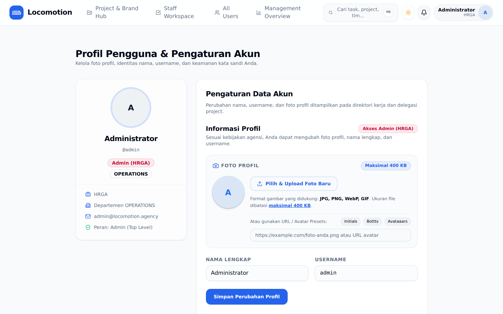

Selamat Datang di Locomotion Dashboard
Pusat kendali operasional agensi kreatif modern. Mengintegrasikan manajemen alur tugas, pelacakan waktu presisi, telemetri revisi, dan arsip deliverable proyek.
🔒 Akun Sudah Siap
Setiap staf telah memiliki username & password default terdaftar.
🚀 Anti-Tenggelam
Tidak ada lagi brief atau task tercecer di history chat WhatsApp.

Personal Dashboard (/dashboard)
Semua tugas yang ditugaskan kepada Anda terkumpul rapi di sini. Tidak perlu lagi bingung apa yang harus dikerjakan hari ini.
- Kolom Status Jelas: To Do → On Progress → In Review → Done.
- Prioritas & Deadline: Terlihat jelas mana yang Urgent dan batas waktunya.
- Konteks PIC: Menampilkan siapa pemberi tugas dan siapa penerimanya.

Live Timer & Revision Telemetry
Bukan untuk mengawasi setiap detik Anda, melainkan mendokumentasikan usaha nyata tim dan melindungi Anda dari beban revisi berlebih.
Start / Pause Timer
Klik Start saat mulai fokus kerja di software (Figma/Premiere/dll), Pause saat rehat.
Perlindungan Revisi (Round 1, Round 2...)
Waktu revisi dicatat terpisah dari durasi awal. Bukti otentik jika klien sering minta rombak di luar brief awal.
Katalog Proyek (/projects)
Semua proyek agensi—mulai dari tahap Pitching, Active, hingga Delivered—tercantum transparan untuk seluruh tim.
Memudahkan penamaan file, aset, dan folder drive bersama.
Ketahui apakah proyek sedang masa review klien atau aktif.

Deliverables & PIC Roster
Buka halaman detail proyek untuk menemukan semua tautan aset resmi dan daftar siapa penanggung jawab masing-masing bagian.
- Tautan Penting: Pitch Deck, Creative Deck, Preview URL, Final Assets.
- Automated PIC Roster: Daftar otomatis staf yang memegang tugas dalam proyek ini.
- Koordinasi Cepat: Tak perlu tanya di grup "siapa yang pegang aset X?", cukup cek roster.

Management Workload Radar
Alat bagi Project Manager dan Lead untuk memantau kapasitas tim secara adil, mencegah staf kelelahan (*burnout*), dan menyeimbangkan delegasi tugas.

Profil & Pengaturan (/profile)
Lengkapi identitas profesional Anda di platform agensi ini.
- Foto Profil / Avatar: Upload foto wajah profesional (maksimal 400 KB).
- Bio & Keahlian: Tuliskan bidang spesialisasi Anda di agensi.
- Keamanan Kata Sandi: Ajukan permohonan reset password jika perlu mengganti password awal.

3 Kebiasaan Emas (Daily Golden Habits)
Hanya butuh 3 langkah sederhana setiap hari agar alur kerja seluruh agensi tetap harmonis dan transparan:
Pagi Hari (Jam Masuk)
Buka /dashboard dan cek kartu tugas di kolom To Do.
Saat Eksekusi
Klik Start Timer saat fokus, jeda saat rehat, lalu geser ke In Review beserta link preview.
Sore Hari (Jam Pulang)
Pastikan tidak ada timer yang tertinggal berjalan semalaman.